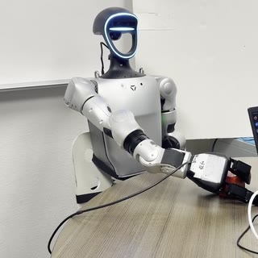

|
Xinyuan Liu I'm a second-year PhD student in Computer Science at Arizona State University, where I'm advised by Ransalu Senanayake in the LENS Lab. Previously, I was a research assistant at Vanderbilt University with Jie Ying Wu, working on multimodal models for surgical robotics. I received my M.S. in Computer Science from Rice University and my B.S. in Software Engineering from Huazhong University of Science and Technology. |

|
ResearchI'm interested in information-efficient AI systems: how intelligent systems can make better decisions from limited but informative signals. My work spans LLM evaluation and routing, cognitive evaluation of humanoid robots, LLM orchestration of multi-robot systems, and multimodal learning for surgical systems. * indicates equal contribution. |
|
 |
Physical Agentic AI: An Architecture for Orchestrating a Robot Crew with LLMs
Xinyuan Liu, Eren Sadikoglu, Riana Chatterjee, Ransalu Senanayake arXiv, 2026 arXiv / code / video / bibtex An LLM plans for a crew of robots but never actuates them; a procedural orchestrator checks every step against declarative workflow contracts before dispatch. Demonstrated on a Unitree G1 humanoid and Go2 quadruped. An abridged version appears at the IROS 2026 Workshop on Foundation Models in Multi-Robot Systems. |
|
CUPID in the Model Zoo: Online Matchmaking for Selecting Your Dream LLM
Son Nguyen, Xinyuan Liu, Ransalu Senanayake ICML, 2026 arXiv / user study code / bibtex A dueling-bandit framework that learns a user's latent preferences from pairwise feedback and matches them to the right LLM under cost and time budgets. |
|
|
LLM Routing as Reasoning: A MaxSAT View
Son Nguyen, Xinyuan Liu, Ransalu Senanayake ICLR Workshop on Logical Reasoning of Large Language Models, 2026 arXiv / OpenReview / bibtex Language-conditioned LLM routing cast as weighted MaxSAT, where natural-language feedback induces hard and soft constraints over model attributes. |
|

|
Humanoid Factors: Design Principles for AI Humanoids in Human Worlds
Xinyuan Liu, Eren Sadikoglu, Ransalu Senanayake, Lixiao Huang arXiv, 2026 arXiv / workshop paper / bibtex A framework of physical, cognitive, social, and ethical humanoid factors for designing and evaluating humanoids that share human spaces. An abridged version, "Cognitive Models as Evaluation Primitives in Humanoid Factors," appears at the ICLR 2026 Workshop on From Human Cognition to AI Reasoning. |
|
Neural-Augmented Kelvinlet for Real-Time Soft Tissue Deformation Modeling
Ashkan Shahbazi*, Kyvia Pereira*, Jon S. Heiselman, Elaheh Akbari, Annie Benson, Sepehr Seifi, Xinyuan Liu, Garrison L. H. Johnston, Jie Ying Wu, Nabil Simaan, Michael Miga, Soheil Kolouri AAAI, 2026 arXiv / paper / code / bibtex A physics-informed neural simulator that combines Kelvinlet analytical priors with FEM data for real-time soft-tissue deformation under surgical grasping. |
Miscellanea |
Academic Service |
Reviewer, NeurIPS 2026
Reviewer, CoRL 2026 Reviewer, IROS 2026 Reviewer, WiML Workshop @ NeurIPS 2026 Reviewer, IROS 2026 Workshop |
|
Website template from Jon Barron. |